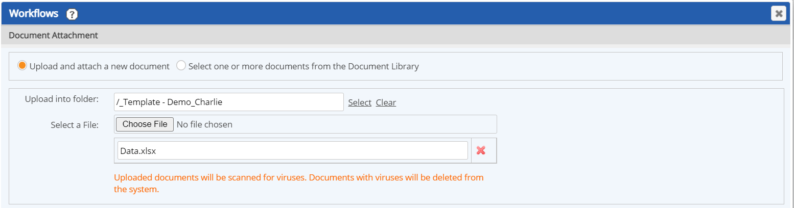
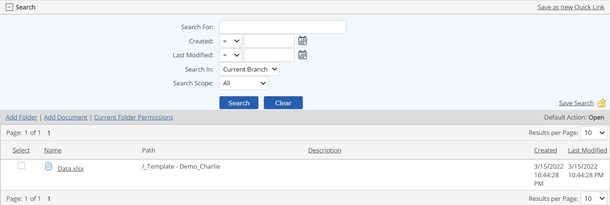
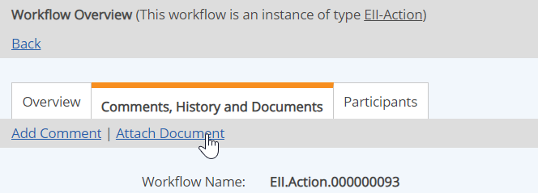
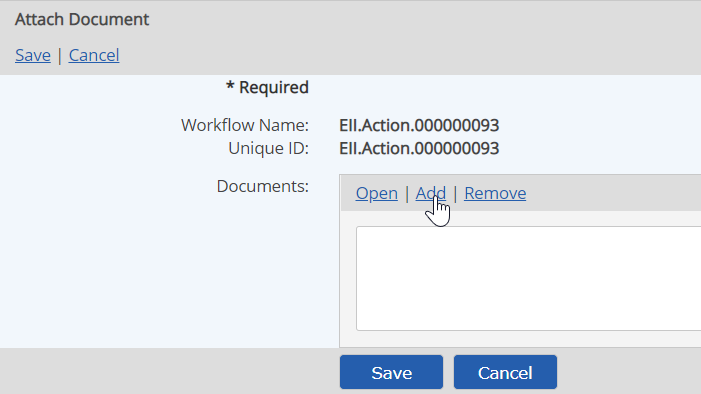
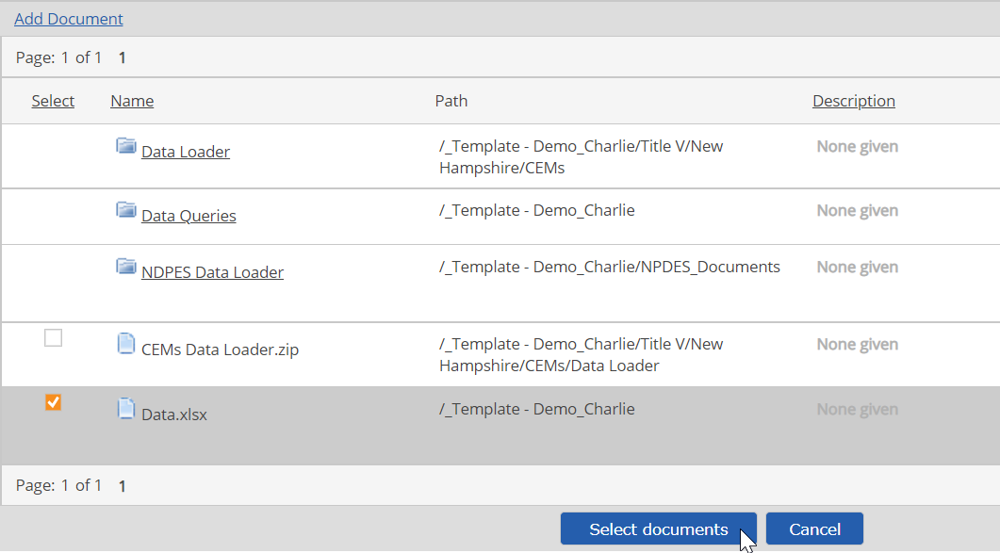

Documents may be attached to a workflow to allow participants to view the relevant documents from a workflow assignment. You may select a document from the Documents library, or attach and upload a document from your computer directly from the workflow interface.
To attach documents to a workflow, you must have the Associate Documents permission for the workflow, granted through any role you are a member of in the workflow, or have the Manage Workflows right. You must also have Document permissions to the appropriate folder in the Documents library.
To attach documents to a workflow from the step completion form:
From the step completion form, click the Attach Document button.
In the Document Attachment dialog, select one of the two options (upload and attach or select from Document Library):
Upload and attach a new document
To upload and attach a new document, do the following:
Click Select to choose the document folder for uploading the document.
Click Choose File and select the document from your computer or network.
Click Upload and Attach.

Select one or more documents from the Document Library
Browse the document folders or use the search to find the document(s) you want.
Check the selection box for each document, then click Select Documents.

After selecting the documents to attach, you will be returned to the step completion form.
You can also attach documents from the Workflow Overview.
Attach documents from the Workflow Overview:
Select the Comments, History and Documents tab.
Select the Attach Document link.

Click Add.

In the selection window, browse the document folders to find the document you want, or expand the Search pane and use the search criteria to find the document.
To upload a new document to the Documents library, click the Add Document link below the Search bar.
From the upload dialog, find the document on your computer or network and upload it to a folder in the Documents library.
Select the checkbox for one or more documents and click Select documents.

Click Save.
Remove an associated document
Select the document and click Remove.
Click Save.
The document is not removed from the EMS Documents library. Only the link to the document is deleted.